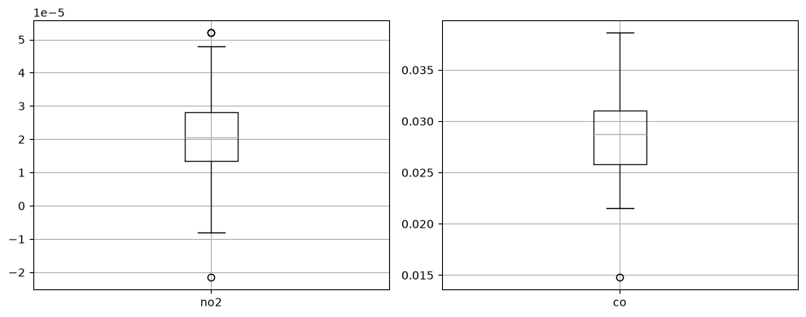
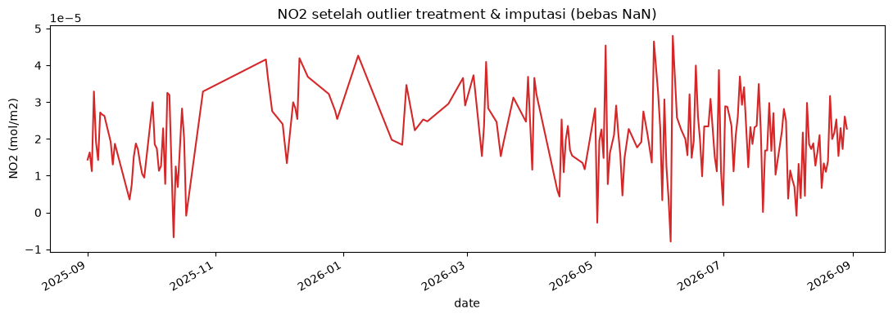

5. Preprocessing & Ekstraksi Fitur (TSFEL)#
Tugas minggu ini: sebelum data dipakai untuk ekstraksi fitur, data harus bersih dari outlier dan tidak ada nilai kosong sama sekali. Setelah itu, sinyal NO2 diekstrak jadi fitur numerik pakai TSFEL (Time Series Feature Extraction Library), dikelompokkan menurut domain statistical, temporal, dan spectral.
Wilayah: Desa Bundah, Kecamatan Sreseh, Kabupaten Sampang.
Note
Install dulu library yang dibutuhkan (sekali saja di venv kamu):
pip install tsfel
import pandas as pd
import numpy as np
import matplotlib.pyplot as plt
df = pd.read_csv("../data/kualitas_udara_bundah_sreseh.csv", parse_dates=["date"])
df = df.set_index("date").sort_index()
df.head()
| no2 | co | |
|---|---|---|
| date | ||
| 2025-09-01 | 0.000014 | 0.028432 |
| 2025-09-02 | 0.000016 | 0.023283 |
| 2025-09-03 | 0.000011 | 0.024006 |
| 2025-09-04 | 0.000033 | 0.029112 |
| 2025-09-05 | 0.000019 | 0.031187 |
5.1 Deteksi Outlier (metode IQR)#
Nilai dianggap outlier kalau berada di luar rentang \([Q1 - 1.5 \times IQR,\ Q3 + 1.5 \times IQR]\), dengan \(IQR = Q3 - Q1\).
def detect_outliers_iqr(series):
q1 = series.quantile(0.25)
q3 = series.quantile(0.75)
iqr = q3 - q1
lower = q1 - 1.5 * iqr
upper = q3 + 1.5 * iqr
mask = (series < lower) | (series > upper)
return mask, lower, upper
outlier_mask = {}
for col in ["no2", "co"]:
mask, lower, upper = detect_outliers_iqr(df[col])
outlier_mask[col] = mask
print(f"{col}: batas normal [{lower:.6f}, {upper:.6f}] -> {mask.sum()} outlier terdeteksi")
no2: batas normal [-0.000008, 0.000050] -> 3 outlier terdeteksi
co: batas normal [0.018035, 0.038864] -> 1 outlier terdeteksi
fig, axes = plt.subplots(1, 2, figsize=(10, 4))
df.boxplot(column="no2", ax=axes[0])
df.boxplot(column="co", ax=axes[1])
plt.tight_layout()
plt.show()

5.2 Treatment Outlier + Imputasi Missing Value#
Outlier yang terdeteksi ditandai sebagai nilai kosong (NaN) terlebih dahulu, digabung dengan missing value yang memang sudah ada sejak crawling (akibat tutupan awan), lalu semuanya diisi sekaligus pakai interpolasi linear berbasis waktu — supaya time series terisi penuh tanpa ada NaN tersisa.
df_clean = df.copy()
for col in ["no2", "co"]:
df_clean.loc[outlier_mask[col], col] = np.nan
print("Total NaN sebelum imputasi (missing asli + outlier yang di-NaN-kan):")
print(df_clean[["no2", "co"]].isna().sum())
Total NaN sebelum imputasi (missing asli + outlier yang di-NaN-kan):
no2 175
co 191
dtype: int64
df_clean[["no2", "co"]] = df_clean[["no2", "co"]].interpolate(
method="time", limit_direction="both"
)
print("Total NaN setelah imputasi:")
print(df_clean[["no2", "co"]].isna().sum())
assert df_clean[["no2", "co"]].isna().sum().sum() == 0, "Masih ada NaN, cek lagi!"
print("Semua data sudah terisi penuh, siap untuk ekstraksi fitur.")
Total NaN setelah imputasi:
no2 0
co 0
dtype: int64
Semua data sudah terisi penuh, siap untuk ekstraksi fitur.
fig, ax = plt.subplots(figsize=(11, 4))
df_clean["no2"].plot(ax=ax, color="tab:red")
ax.set_title("NO2 setelah outlier treatment & imputasi (bebas NaN)")
ax.set_ylabel("NO2 (mol/m2)")
plt.tight_layout()
plt.show()

5.3 Ekstraksi Fitur dengan TSFEL#
TSFEL menyediakan lebih dari 65 fitur otomatis dari domain statistical, temporal, spectral, dan fractal. Karena tugas ini cuma minta 3 domain (statistical, temporal, spectral), konfigurasinya digabung manual supaya domain fractal tidak ikut.
Note
fs=1 di bawah artinya diasumsikan 1 sampel per hari (data harian) —
dipakai sebagai basis perhitungan fitur domain spectral (berbasis FFT).
import tsfel
import pandas as pd
import numpy as np
cfg = tsfel.get_features_by_domain()
no2_signal = df_clean["no2"].reset_index(drop=True)
# --- PATCH: panggil calc_window_features langsung, hindari .reindex() buggy ---
from tsfel.feature_extraction.calc_features import calc_window_features
X_raw = calc_window_features(
cfg,
no2_signal,
fs=1,
window_size=len(no2_signal),
verbose=0,
)
# Buang kolom duplikat (jika ada), lalu sort
X_all = X_raw.loc[:, ~X_raw.columns.duplicated()]
X_all = X_all.reindex(sorted(X_all.columns), axis=1)
print("Jumlah fitur total:", X_all.shape[1])
X_all.head()
Jumlah fitur total: 148
| 0_Absolute energy | 0_Area under the curve | 0_Autocorrelation | 0_Average power | 0_Centroid | 0_ECDF Percentile Count_0 | 0_ECDF Percentile Count_1 | 0_ECDF Percentile_0 | 0_ECDF Percentile_1 | 0_ECDF_0 | ... | 0_Wavelet standard deviation_0.12Hz | 0_Wavelet standard deviation_0.25Hz | 0_Wavelet variance_0.03Hz | 0_Wavelet variance_0.04Hz | 0_Wavelet variance_0.05Hz | 0_Wavelet variance_0.06Hz | 0_Wavelet variance_0.08Hz | 0_Wavelet variance_0.12Hz | 0_Wavelet variance_0.25Hz | 0_Zero crossing rate | |
|---|---|---|---|---|---|---|---|---|---|---|---|---|---|---|---|---|---|---|---|---|---|
| 0 | 2.437783e-07 | 0.008625 | 9.0 | 6.752861e-10 | 163.948262 | 72.0 | 289.0 | 0.000015 | 0.000033 | 0.002762 | ... | 0.000009 | 0.000007 | 3.226975e-10 | 2.565726e-10 | 1.992515e-10 | 1.394366e-10 | 9.489029e-11 | 7.672306e-11 | 4.446014e-11 | 10.0 |
1 rows × 148 columns
Note
Kalau masih error ValueError: cannot reindex on an axis with duplicate labels
setelah pakai window_size eksplisit di atas, coba langkah berikut secara
berurutan:
Update TSFEL ke versi terbaru:
pip install --upgrade tsfel, lalu Restart Kernel dan Run All lagi.Kalau masih gagal, cek versi pandas:
pip show pandas. Kalau versinya 2.x ke atas, coba turunkan sedikit:pip install "pandas<2.0"lalu restart kernel (beberapa versi TSFEL lama belum kompatibel penuh dengan pandas 2.x).
Kalau nama fungsi time_series_features_extractor error AttributeError,
coba tsfel.time_series_feature_extractor(...) (tanpa huruf “s” di
“series_feature”) — beda penamaan tergantung versi TSFEL kamu.
5.4 Kelompokkan Fitur per Domain#
domain_lookup = {}
for domain, feats in cfg.items():
for feat_name in feats.keys():
key = feat_name.lower().replace(" ", "")
domain_lookup[key] = domain
def get_domain(col_name):
suffix = col_name.split("_", 1)[-1] if "_" in col_name else col_name
key = suffix.lower().replace(" ", "")
return domain_lookup.get(key, "unknown")
feature_domain_map = pd.Series({col: get_domain(col) for col in X_all.columns}, name="domain")
feature_domain_map.value_counts()
domain
unknown 98
spectral 19
statistical 17
temporal 14
Name: count, dtype: int64
# Sesuai tugas: cuma pakai domain statistical, temporal, spectral (buang fractal)
kolom_dipakai = feature_domain_map[
feature_domain_map.isin(["statistical", "temporal", "spectral"])
].index
X = X_all[kolom_dipakai]
print("Jumlah fitur setelah difilter ke 3 domain:", X.shape[1])
X.head()
Jumlah fitur setelah difilter ke 3 domain: 50
| 0_Absolute energy | 0_Area under the curve | 0_Autocorrelation | 0_Average power | 0_Centroid | 0_Entropy | 0_Fundamental frequency | 0_Histogram mode | 0_Human range energy | 0_Interquartile range | ... | 0_Spectral roll-on | 0_Spectral skewness | 0_Spectral slope | 0_Spectral spread | 0_Spectral variation | 0_Standard deviation | 0_Sum absolute diff | 0_Variance | 0_Wavelet entropy | 0_Zero crossing rate | |
|---|---|---|---|---|---|---|---|---|---|---|---|---|---|---|---|---|---|---|---|---|---|
| 0 | 2.437783e-07 | 0.008625 | 9.0 | 6.752861e-10 | 163.948262 | 1.0 | 0.002762 | 0.000023 | 0.0 | 0.000015 | ... | 0.0 | 0.758966 | -0.027213 | 0.156583 | 0.333931 | 0.00001 | 0.00198 | 1.038955e-10 | 2.132146 | 10.0 |
1 rows × 50 columns
# Daftar lengkap fitur per domain (untuk dokumentasi laporan)
for domain in ["statistical", "temporal", "spectral", "unknown"]:
kolom = feature_domain_map[feature_domain_map == domain].index.tolist()
print(f"\n=== {domain.upper()} ({len(kolom)} fitur) ===")
print(kolom)
=== STATISTICAL (17 fitur) ===
['0_Absolute energy', '0_Average power', '0_Entropy', '0_Histogram mode', '0_Interquartile range', '0_Kurtosis', '0_Max', '0_Mean', '0_Mean absolute deviation', '0_Median', '0_Median absolute deviation', '0_Min', '0_Peak to peak distance', '0_Root mean square', '0_Skewness', '0_Standard deviation', '0_Variance']
=== TEMPORAL (14 fitur) ===
['0_Area under the curve', '0_Autocorrelation', '0_Centroid', '0_Mean absolute diff', '0_Mean diff', '0_Median absolute diff', '0_Median diff', '0_Negative turning points', '0_Neighbourhood peaks', '0_Positive turning points', '0_Signal distance', '0_Slope', '0_Sum absolute diff', '0_Zero crossing rate']
=== SPECTRAL (19 fitur) ===
['0_Fundamental frequency', '0_Human range energy', '0_Max power spectrum', '0_Maximum frequency', '0_Median frequency', '0_Power bandwidth', '0_Spectral centroid', '0_Spectral decrease', '0_Spectral distance', '0_Spectral entropy', '0_Spectral kurtosis', '0_Spectral positive turning points', '0_Spectral roll-off', '0_Spectral roll-on', '0_Spectral skewness', '0_Spectral slope', '0_Spectral spread', '0_Spectral variation', '0_Wavelet entropy']
=== UNKNOWN (98 fitur) ===
['0_ECDF Percentile Count_0', '0_ECDF Percentile Count_1', '0_ECDF Percentile_0', '0_ECDF Percentile_1', '0_ECDF_0', '0_ECDF_1', '0_ECDF_2', '0_ECDF_3', '0_ECDF_4', '0_ECDF_5', '0_ECDF_6', '0_ECDF_7', '0_ECDF_8', '0_ECDF_9', '0_LPCC_0', '0_LPCC_1', '0_LPCC_10', '0_LPCC_11', '0_LPCC_2', '0_LPCC_3', '0_LPCC_4', '0_LPCC_5', '0_LPCC_6', '0_LPCC_7', '0_LPCC_8', '0_LPCC_9', '0_MFCC_0', '0_MFCC_1', '0_MFCC_10', '0_MFCC_11', '0_MFCC_2', '0_MFCC_3', '0_MFCC_4', '0_MFCC_5', '0_MFCC_6', '0_MFCC_7', '0_MFCC_8', '0_MFCC_9', '0_Spectrogram mean coefficient_0.02Hz', '0_Spectrogram mean coefficient_0.03Hz', '0_Spectrogram mean coefficient_0.05Hz', '0_Spectrogram mean coefficient_0.06Hz', '0_Spectrogram mean coefficient_0.08Hz', '0_Spectrogram mean coefficient_0.0Hz', '0_Spectrogram mean coefficient_0.11Hz', '0_Spectrogram mean coefficient_0.13Hz', '0_Spectrogram mean coefficient_0.15Hz', '0_Spectrogram mean coefficient_0.16Hz', '0_Spectrogram mean coefficient_0.18Hz', '0_Spectrogram mean coefficient_0.19Hz', '0_Spectrogram mean coefficient_0.1Hz', '0_Spectrogram mean coefficient_0.21Hz', '0_Spectrogram mean coefficient_0.23Hz', '0_Spectrogram mean coefficient_0.24Hz', '0_Spectrogram mean coefficient_0.26Hz', '0_Spectrogram mean coefficient_0.27Hz', '0_Spectrogram mean coefficient_0.29Hz', '0_Spectrogram mean coefficient_0.31Hz', '0_Spectrogram mean coefficient_0.32Hz', '0_Spectrogram mean coefficient_0.34Hz', '0_Spectrogram mean coefficient_0.35Hz', '0_Spectrogram mean coefficient_0.37Hz', '0_Spectrogram mean coefficient_0.39Hz', '0_Spectrogram mean coefficient_0.42Hz', '0_Spectrogram mean coefficient_0.44Hz', '0_Spectrogram mean coefficient_0.45Hz', '0_Spectrogram mean coefficient_0.47Hz', '0_Spectrogram mean coefficient_0.48Hz', '0_Spectrogram mean coefficient_0.4Hz', '0_Spectrogram mean coefficient_0.5Hz', '0_Wavelet absolute mean_0.03Hz', '0_Wavelet absolute mean_0.04Hz', '0_Wavelet absolute mean_0.05Hz', '0_Wavelet absolute mean_0.06Hz', '0_Wavelet absolute mean_0.08Hz', '0_Wavelet absolute mean_0.12Hz', '0_Wavelet absolute mean_0.25Hz', '0_Wavelet energy_0.03Hz', '0_Wavelet energy_0.04Hz', '0_Wavelet energy_0.05Hz', '0_Wavelet energy_0.06Hz', '0_Wavelet energy_0.08Hz', '0_Wavelet energy_0.12Hz', '0_Wavelet energy_0.25Hz', '0_Wavelet standard deviation_0.03Hz', '0_Wavelet standard deviation_0.04Hz', '0_Wavelet standard deviation_0.05Hz', '0_Wavelet standard deviation_0.06Hz', '0_Wavelet standard deviation_0.08Hz', '0_Wavelet standard deviation_0.12Hz', '0_Wavelet standard deviation_0.25Hz', '0_Wavelet variance_0.03Hz', '0_Wavelet variance_0.04Hz', '0_Wavelet variance_0.05Hz', '0_Wavelet variance_0.06Hz', '0_Wavelet variance_0.08Hz', '0_Wavelet variance_0.12Hz', '0_Wavelet variance_0.25Hz']
5.5 Simpan Hasil (untuk di-upload)#
File CSV di bawah ini adalah hasil akhir yang akan di-upload tanpa diubah sedikit pun ke https://psd.basisdata2-c.my.id/upload.php, dengan Nama dan Daerah (Sreseh, Kabupaten Sampang) diisi sesuai identitas masing-masing.
X.to_csv("../data/fitur_no2_bundah_sreseh.csv", index=False)
print("Tersimpan di ../data/fitur_no2_bundah_sreseh.csv")
Tersimpan di ../data/fitur_no2_bundah_sreseh.csv
5.6 Kesimpulan#
Outlier pada NO2 dan CO dideteksi memakai metode IQR, ditandai sebagai NaN, lalu digabung dengan missing value asli (akibat tutupan awan) dan diisi sekaligus lewat interpolasi waktu — hasilnya time series NO2 & CO yang sudah bebas nilai kosong.
Sinyal NO2 yang sudah bersih diekstrak jadi fitur numerik dengan TSFEL, mencakup domain statistical (mis. mean, variance, skewness), temporal (mis. autocorrelation, slope, zero crossing rate), dan spectral (mis. spectral entropy, spectral centroid) — semuanya berbasis FFT dengan asumsi 1 sampel per hari.
File fitur inilah yang jadi representasi numerik ringkas dari setahun data NO2 Desa Bundah, siap dipakai untuk analisis lanjutan (klasifikasi, clustering, dsb) dan sudah diupload ke basis data kelas.